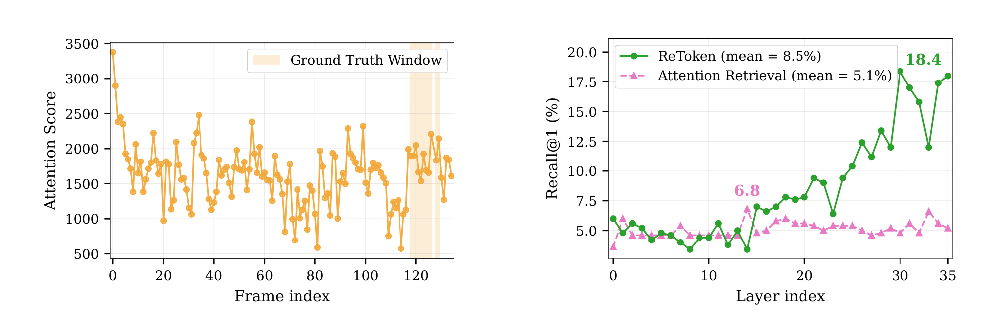
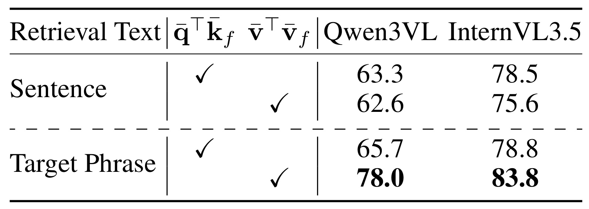
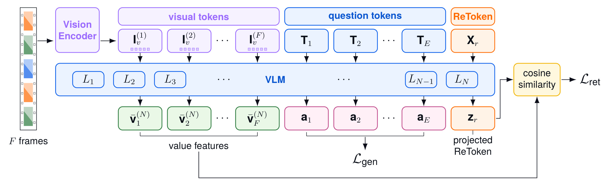
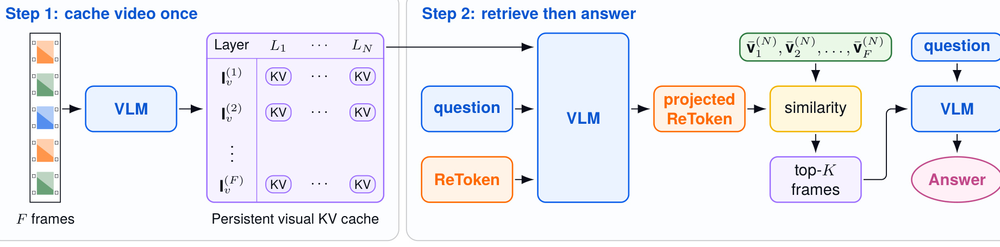
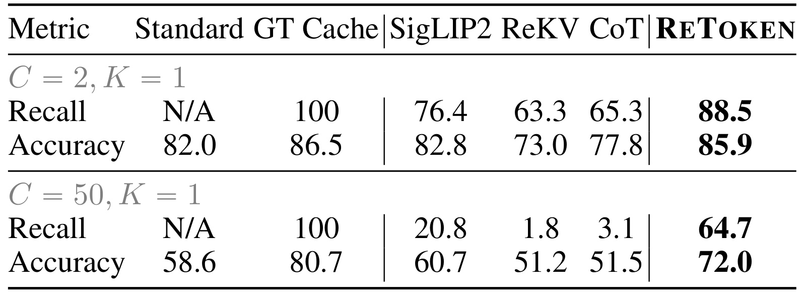
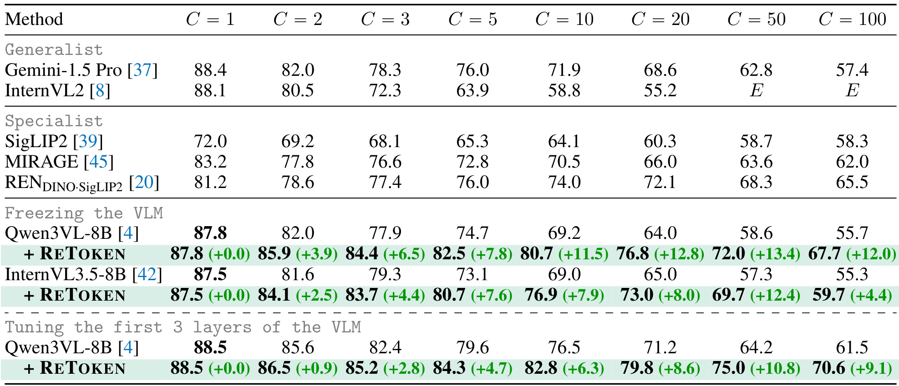
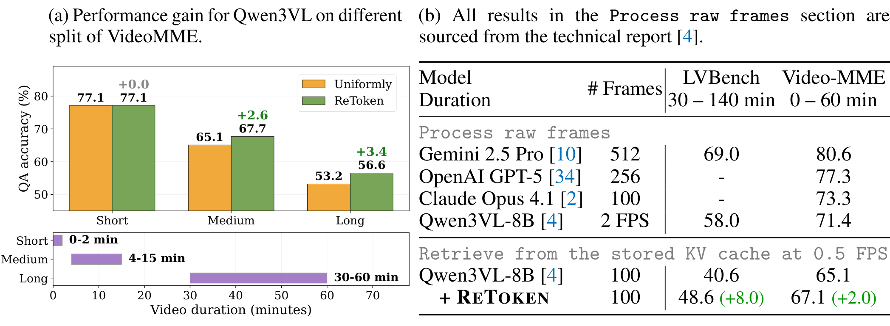
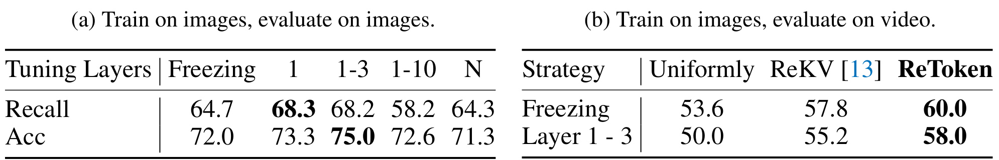
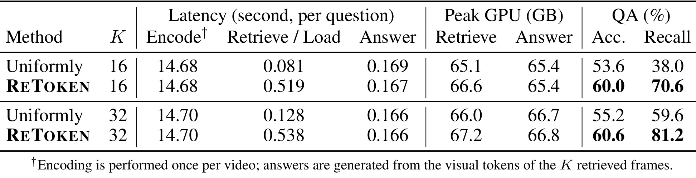
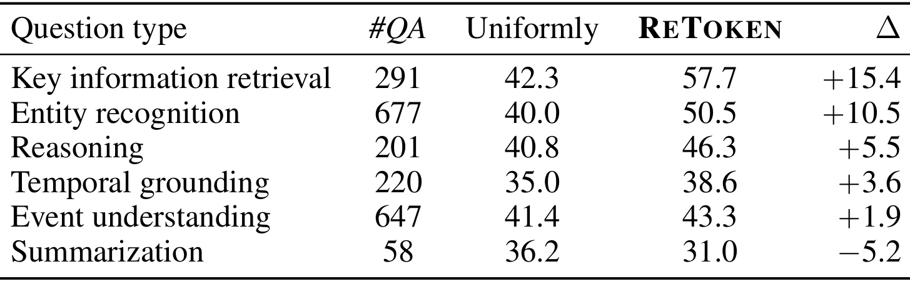

ReToken：用一个检索 token 改善视觉语言模型的长视觉检索
ReToken 的目标不是再训练一个独立的视频检索器，而是在现成视觉语言模型内部增加一个可学习检索 token，让它从预先填充的视觉 KV cache 中找出与当前问题最相关的少量帧，再用这些帧完成回答。论文由 Yao Xiao、Reuben Tan、Zhen Zhu、Yuqun Wu、Jianfeng Gao 与 Derek Hoiem 完成；一作主机构是 University of Illinois Urbana-Champaign，合作机构包括 Microsoft Research 与 Google DeepMind。论文于 2026 年 7 月 30 日公开，入口为 arXiv:2607.28627。作者已公开核验过的官方 GitHub 仓库，其中包含 Qwen3VL、InternVL 实现、Visual Haystacks 与长视频评测代码、模型权重入口和 MIT License。
随着无关图像或视频帧增加，视觉语言模型的回答质量会下降；全量视觉 token 同时处理又受 GPU 显存限制，而模型自身的文本到视觉注意力与真实相关性只有弱相关，不能直接充当可靠检索器。
1. 背景和问题
1.1 长视觉上下文最终变成一个检索问题
小时级视频或大规模图片集合在形式上已经能被一些 VLM 接收，但“能放入上下文”与“能从上下文中稳定找到证据”不是一回事。对于一个只涉及数秒片段的问题，大多数视频帧都是干扰项。若把全部视觉 token 送进解码器，注意力和 KV cache 的显存开销随上下文增长；若预先压缩或固定采样，又可能在知道问题之前就丢掉细粒度证据。于是论文把长视觉理解重新表述为：给定问题，从 $F$ 帧中选择 $K\ll F$ 个帧，使保留 token 足以支持答案生成。这个表述与外部 CLIP 检索不同，因为目标不是先找图片再重新编码，而是复用 VLM 已经产生的逐层视觉 KV cache。
此前的 ReKV、InfLLM 一类工作把模型自己的 attention score 当作相关性信号。这个思路在长文本中有一定合理性：query-key 内积决定注意力权重，训练充分的长上下文语言模型有时会学到选择性。但 VLM 的视觉训练样本通常不会刻意混入大量无关图片，next-token prediction 也没有要求“相关帧必须排到前面”。因此，高注意力只能说明某个 token 在当前前向传播中被聚合得多，不能保证它就是回答问题所需的证据。ReToken 的第一项价值正是把这个常被默认成立的假设拆开验证。
1.2 注意力信号失效的直接证据

Figure 1 的左图取一个视频实例，把问题 token 到各帧 token 的 attention score 画在时间轴上。浅黄色区域是真实相关时间窗，但橙色分数在整段视频中大幅波动，相关窗口并没有形成清楚峰值；这说明仅靠分数最大值容易选到视觉上活跃、却与问题无关的帧。右图进一步在 QAEgo4D Test-MC 上统计逐层 Recall@1：attention retrieval 的层均值只有 5.1%，最后一层仍约 5%；ReToken 的层均值为 8.5%，到最后一层达到 18.4%，超过 attention 基线三倍。这里不能把 18.4% 解读成“检索已经解决”，因为 top-1 绝对召回仍低；更准确的结论是，显式训练后的检索 token 会随层数积累问题与视觉信息，而原始 attention 并没有自然涌现出可靠定位能力。
attention 基线还有第二个不稳定来源：如何把一整句问题压成检索向量。若直接平均 $E$ 个问题 token 的 query，诸如“对于这张图片”“是否存在”等功能词与真正的目标实体被同权混合。论文用完整问句与精确目标短语做控制实验，发现更具体的“a cow”比整句“For the image with a cow, is there a truck?”更适合作为检索目标。这不是简单的 prompt 技巧，而是揭示检索表示需要主动过滤回答逻辑，只保留“要去视觉上下文中找什么”。
1.3 value 空间比 key 空间更接近被传播的内容

Table 1 把“检索文本是否精确”和“在哪个投影空间打分”两个变量交叉比较。在双图、取一图的设置中，Qwen3VL 用完整句子时，query-key 为 63.3，value-value 反而略降至 62.6；换成目标短语后，query-key 只升到 65.7，而 value-value 跃升到 78.0。InternVL3.5 也呈现同样结构：78.5/75.6 变为 78.8/83.8。value 并非无条件优于 key；它对检索文本中的噪声更敏感，但在目标足够精确时携带更强视觉语义。作者的解释是：key 主要参与决定“聚合谁”，value 则是实际被传播给后续 token 的内容。ReToken 因而同时修复两件事——不用整句平均充当目标，并把匹配移到 value 空间。
这也界定了论文与 Q-Former、Perceiver Resampler 或视觉摘要 token 的差别。后者通常用 32 到 64 个学习 query，把视觉特征压成固定长度表示并继续送入生成；ReToken 只使用一个 token，输出不是视觉内容本身，而是逐帧相关性分数。它更接近一个嵌在 VLM 内部、能读取上下文化视觉状态的检索头。外部检索器仍可能拥有更好的跨模态预训练，但需要独立编码和特征空间；ReToken 的赌注是复用回答模型自己的 value 表征，以极小参数量把检索目标补进去。
2. 方法
2.1 从 attention retrieval 到 value-space 诊断
论文先形式化 ReKV 风格的基线。设视觉输入被分为 $F$ 帧，第 $f$ 帧的视觉 token 集合为 $\mathbf{I}^{(f)}_v$；解码器共有 $N$ 层，在第 $l$ 层把该帧的 key 向量求均值，并把 $E$ 个问题 token 的 query 求均值：
符号解释：$f\in\{1,\ldots,F\}$ 是帧索引，$l\in\{1,\ldots,N\}$ 是 Transformer 层，$\mathbf{k}^{(l)}_i$ 是视觉 token $i$ 的 key 投影，$\mathbf{q}^{(l)}_t$ 是问题 token $t$ 的 query 投影，$|\mathbf{I}^{(f)}_v|$ 是该帧 token 数，$E$ 是问题 token 数。两个均值把“帧内空间位置”和“问句内词语差异”都压成单向量，计算便宜，却也把小目标与关键名词稀释掉；它们是论文诊断的基线，不是 ReToken 本身。
随后以点积给每帧打分，并在每层选 top-$K$：
符号解释：$s_f^{(l)}$ 是第 $l$ 层对帧 $f$ 的相关性分数，$\mathcal{S}^{(l)}_K$ 是这一层选出的 $K$ 帧索引。ReKV 会让问题和答案 token 在各层只访问各自的 $\mathcal{S}^{(l)}_K$。风险在于每层集合可不同，且分数没有检索标签监督；它只是 next-token attention 的副产品。如果早层漏掉关键帧，后层即使语义更强也可能没有机会恢复该证据。 ReToken 的设计因此不再要求所有层独立猜相关帧，而是在最终层形成一个受监督集合，再把同一集合广播给回答阶段的所有层。
2.2 单个 ReToken 的检索打分与训练
ReToken 是追加在问题末尾的可学习嵌入 $\mathbf{X}_r\in\mathbb{R}^d$。经过整条 VLM 后，取它在最终层的上下文化状态 $\mathbf{X}^{(N)}_r$，再乘一个可学习投影 $\mathbf{W}_r$。同时，对每帧最终层 value 求均值，二者用余弦相似度打分：
符号解释：$\mathbf{v}^{(N)}_i$ 是最终层视觉 token 的 value，$\bar{\mathbf{v}}^{(N)}_f$ 是第 $f$ 帧的内容表示，$\mathbf{Z}_r$ 是 ReToken 状态经 $\mathbf{W}_r\in\mathbb{R}^{d\times d}$ 投影后的检索向量，$s_f^{(N)}$ 是余弦分数。核心机制是让一个 token 在看过问题与视觉上下文后，学习“该问题应怎样在模型自己的 value 空间里被表达”，而不是手工平均整句。 默认训练冻结 VLM，只更新 $\mathbf{X}_r$、$\mathbf{W}_r$ 和可学习温度，因而参数增量很小。

Figure 3 从左到右显示完整监督路径。$F$ 帧先经视觉编码器成为分组视觉 token，与问题 token 和 ReToken 一起进入 VLM；最终层一侧输出逐帧 value 均值，另一侧输出 ReToken 的上下文化状态。投影后的 ReToken 与每帧 value 做 cosine，得到检索损失；答案 token 的生成损失只在局部解冻 VLM 时启用。图中 $L_{gen}$ 的虚线位置很重要：默认冻结方案不会为了答案生成去更新骨干，检索监督也不会直接改写缓存中的视觉表示；只有 partial tuning 才会让早层 value 变得更“干净”，同时承担图像数据向视频域过拟合的风险。
训练标签把相关帧集合记为 $\mathcal{F}^{+}$、无关帧集合记为 $\mathcal{F}^{-}$。长上下文里负帧远多于正帧，若直接对所有帧求平均 BCE，模型只需把大多数项判负就能获得较低损失。论文让正负两部分分别归一化：
符号解释：$y_f\in\{0,1\}$ 决定帧 $f$ 属于 $\mathcal{F}^{+}$ 还是 $\mathcal{F}^{-}$，$\sigma$ 是 sigmoid，$\tau$ 是可学习 logit scale，$s_f^{(N)}$ 来自最终层余弦分数。分别平均使每个样本中的“找到正证据”和“排除干扰项”权重相当，$\tau$ 则调整余弦分数进入 BCE 时的置信度范围。这个目标监督的是排序所需的绝对正负分离，不直接保证 top-$K$ 内帧之间的时间连续性，也没有为跨帧组合证据设计集合级损失。
当作者额外解冻 VLM 的早期若干层时，用标准 next-token generation loss 约束回答能力，联合目标为：
符号解释：$\mathcal{L}_{\mathrm{ret}}$ 优化帧相关性，$\mathcal{L}_{\mathrm{gen}}$ 保持答案生成，$\lambda$ 控制二者权衡。这个公式只适用于 partial tuning；默认冻结 VLM 时没有必要靠生成损失更新骨干。实验显示解冻 1–3 层能改善图像干扰环境，但会降低从图像到视频的迁移，说明“让缓存更利于独立帧检索”和“保留邻帧间时序融合”并非同一个目标。
2.3 持久 KV cache 与两遍 retrieve-then-answer

Figure 4 把推理拆成可摊销的两个阶段。视频进入系统时只编码一次，每层、每帧产生的 key/value 状态写入持久缓存；每来一个新问题，第一遍把问题与 ReToken 送入 VLM，让 ReToken 读取缓存并在最终层选 top-$K$；第二遍只加载这些帧在各层的 KV，与原问题一起生成答案。因此编码成本可被同一视频上的多个问题复用，回答阶段处理的视觉 token 数约为 $K\cdot M/F$，而不是全部 $M$。图中“retrieve then answer”不是一个前向里顺手裁剪 attention，而是两次明确前向，这正是 Table 9 中单遍 50.4、两遍 72.0 巨大差距的来源。
长视频不能让 ReToken 在早层访问全部 cache。作者沿用分块编码与滑窗 attention：每次编码 128 帧，窗口 $l_m=30{,}000$ token，约对应 153 帧；旧 KV 可卸载到 CPU。检索第一遍在每个 $l<N$ 的早层，用当前 ReToken 状态经该层冻结 value projection 后，与所有帧的 value 均值做 cosine，只让 ReToken 访问 top-$K'$ 帧，默认 $K'=256$。最终层再用受监督的 Equation 3 产生 $\mathcal{S}^{(N)}_K$，按时间戳恢复顺序。这里 $K'$ 与回答预算 $K$ 有意不对称：检索器先看更宽候选集，回答器只看更窄证据集。
训练与推理存在一个需要复现者特别留意的差异。训练样本是较短的多图 QA，不需要真的按 top-$K$ 截断上下文；监督落在最终层 ReToken 分数上。推理却需要第一遍完成上下文化并得到最终层集合，再把它广播给第二遍所有层。若擅自改成每层独立 top-$K$、让 ReToken 完全跳过视觉 token，或把 $K'$ 设得过窄，就改变了论文验证过的信息路径。附录 Table 14 也说明，只让 ReToken 汇总查询而不看图像虽仍有一定效果，但 C=50 时准确率为 63.1，明显低于同时看问题和视觉上下文的 72.0；这个 token 同时承担查询组合与视觉证据汇聚。
3. 实验结果
3.1 数据、骨干与评测口径
训练数据来自 MIRAGE 的多图 QA 微调集，包含 RetVQA、SlideVQA、WebQA 以及从 LLaVA Visual Instruct 150K 适配的合成多图样本。作者发现部分问答已被 Qwen3VL 预训练记忆：模型看全部干扰图时的生成损失反而低于只看真值图，样本不再真正要求检索。为此，他们删除疑似记忆样本、保留 attention 对真值图较高的较易检索样本，并移除单图与 OCR 型问题，最终得到 70,686 个样本，按 95%/5% 划分训练和验证。附录 Table 12 显示过滤在 C=50 时把准确率从 69.3 提到 72.0、C=100 从 62.7 提到 67.7，但这套过滤依赖冻结 Qwen3VL 的训练集信号，换骨干时是否仍最优尚未验证。
默认冻结设置在 Qwen3VL-8B 上使用有效 batch 64、学习率 $3\times10^{-4}$、训练 3 个 epoch；InternVL3.5-8B 因每图 token 更多只训练 1 个 epoch。局部微调采用 $2\times10^{-5}$，第一轮后就早停；Qwen3VL-8B 训练约 4 小时，单张 H100 完成。评测覆盖四个互补场景：Visual Haystacks 用 1,000 个二元问题和不同数量 COCO 干扰图测纯检索；QAEgo4D Test-MC 覆盖 4–20 分钟第一视角视频并提供证据时段；LVBench 有 103 个视频、总长约 117 小时、平均 68 分钟；Video-MME 有 900 个视频、2,700 个选择题，按短中长时长拆分。除 Visual Haystacks 同时报 Recall 与 Accuracy，其余视频任务主要报告选择题准确率。
3.2 Visual Haystacks：检索与回答主结果

Table 2 在冻结 Qwen3VL-8B、$K=1$ 下比较 Standard、真值缓存 oracle、SigLIP2 外部检索、ReKV、CoT 查询改写和 ReToken。C=2 时 ReToken 召回 88.5、准确率 85.9，接近 GT Cache 的 86.5 准确率；C=50 时差距更鲜明：ReToken 召回 64.7、准确率 72.0，而 SigLIP2 是 20.8/60.7，ReKV 只有 1.8/51.2，CoT 改写也仅 3.1/51.5。oracle 准确率为 80.7，说明 ReToken 保留了 oracle 与标准全量输入之间大部分可得收益。这里 Recall 与 Accuracy 必须一起看：高召回不保证 VLM 能正确回答，而 ReKV 的低准确率则与检索几乎找不到真值图一致。
同一表还暴露 KV cache 的污染。GT Cache 明明只加载真值图的缓存，准确率却从 C=2 的 86.5 降到 C=50 的 80.7；原因是缓存中的真值图 token 在最初编码时已 attention 到前序干扰图，单独取出 KV 并不等同于重新编码干净真值图。Table 3 用 GT Image 与 GT Cache 的差值量化污染：冻结骨干在 C=50 的差值为 7.1，局部解冻 1–3 层并联合训练后降到 4.9。ReToken 默认不修改骨干，所以只能选对“带污染的缓存块”，不能从缓存表征中消除已经混入的干扰内容。

Table 4 展开 C=1 到 C=100 的完整趋势。冻结 Qwen3VL-8B 在没有干扰的 C=1 为 87.8，ReToken 因 $C\le K$ 跳过检索，结果不变；到 C=10、20、50，基线分别为 69.2、64.0、58.6，ReToken 达到 80.7、76.8、72.0，对应 +11.5、+12.8、+13.4。InternVL3.5-8B 在 C=50 从 57.3 提到 69.7，即 +12.4；但 C=100 仅 +4.4，作者认为与只训练 1 个 epoch 有关。局部微调 1–3 层的 Qwen3VL+ReToken 在 C=50 达 75.0，却不能据此断言全面优于冻结方案，因为后面的长视频实验显示域迁移会变差。
与外部方法相比，C=50 时 ReToken 的 72.0 高于 Gemini-1.5 Pro 的 62.8、SigLIP2 的 58.7、MIRAGE 的 63.6 与 REN 的 68.3。不过比较并非完全同构：部分系统使用不同骨干或独立检索表征，ReToken 数字绑定 Qwen3VL-8B；论文主张成立的更稳健部分是“在同一冻结骨干上，显式 value-space 检索大幅缓解干扰项退化”。另一个有意思的现象来自未截图的 Figure 5：ReToken 在小 $K$ 时最好，随着 $K$ 增大反而纳入更多干扰项；ReKV 则需放宽预算才提高召回。这表明 ReToken 的优势是每个检索槽位更精确，不是简单靠扩大上下文。
3.3 从图像训练零样本迁移到长视频
QAEgo4D Test-MC 首先验证紧预算检索。$K=1$ 时均匀采样为 42.8、ReKV 为 42.6、ReToken 为 49.6，即相对均匀采样 +6.8；$K=16$ 时三者为 53.6、57.8、60.0；$K=32$ 时为 55.2、59.8、60.6。随着 K 增大，邻帧提供的互补信息被保留，所有方法上升，ReToken 对均匀采样的优势缩小。这和多图 single-needle 不同：视频证据常跨相邻帧，检索并非越稀疏越好。论文只在图像数据上训练 ReToken，所以这些结果更像“空间对象检索表征可迁移到视频”的证据，不代表已经学到时序推理。

Table 6 左侧按 Video-MME 时长拆分：短视频在 0.5 FPS 下约 60 帧，低于 100 帧回答预算，根本不触发检索，因此均匀与 ReToken 都是 77.1；中等视频从 65.1 提到 67.7（+2.6），长视频从 53.2 提到 56.6（+3.4）。右侧显示 LVBench 用 100 帧缓存时，Qwen3VL-8B 从 40.6 升到 48.6（+8.0）；Video-MME 总体从 65.1 到 67.1（+2.0）。表中 Gemini、GPT-5、Claude 与 2 FPS Qwen3VL 的 raw-frame 数字来自别的技术报告，不能与 0.5 FPS 缓存检索视为严格受控对照；ReToken 最可信的对照仍是同骨干、同缓存采样率的 +ReToken 行。
LVBench 平均视频超过一小时，+8.0 说明稀疏检索在超长上下文中确有价值，但绝对 48.6 仍低于 raw-frame Qwen3VL 报告的 58.0。这提示缓存检索交换了覆盖率与成本：它允许单 H100 处理长视频，却会因为 0.5 FPS 采样、帧均值和 top-100 截断遗漏细节。若业务问题需要全局故事线或高频动作，先做任务类型路由，再决定用 ReToken、均匀覆盖还是混合策略，比把一个检索器固定用于所有问题更合理。
3.4 value 选择、冻结策略与两遍推理消融
value-space 的优势不只来自手工目标短语。训练后的 ReToken 在 C=50、K=1 上若与平均 key 打分，Recall/Accuracy 为 59.4/70.6；改用平均 value 为 64.7/72.0。附录 Figure 6 还显示 value 版本的检索损失收敛更快、正负图分数间隔更大。一个 token 是否容量不足？Table 13 中 3 tokens 与 1 token 总体相当，C=50 为 72.1 vs. 72.0。作者认为三 token 共用平均分数监督，没有机制促成专门化，所以它们可能学到近似解；这并不能证明多 token 永远无用，只说明在当前监督下增加数量没有自然产生分工。

Table 8(a) 在 Visual Haystacks C=50、K=1 比较解冻深度。冻结时 Recall/Acc 为 64.7/72.0；只调第 1 层为 68.3/73.3；调 1–3 层达到 68.2/75.0；调 1–10 层降到 58.2/72.6，全量 N 层为 64.3/71.3。少量早层可把视觉缓存塑造成更抗干扰表示，解冻过深却破坏原模型。Table 8(b) 给出反例：QAEgo4D 的 K=16 视频迁移中，冻结 ReToken 为 60.0，调 1–3 层后降至 58.0；均匀采样也从 53.6 降到 50.0。图像检索分布上的表示清洁化损害了邻帧关系或视频域特征，因而默认冻结方案虽然图像分数较低，却有更好的跨域稳健性。
两遍推理同样是必要组件，不是可以随意去掉的系统开销。Table 9 中 ReKV 单遍 51.2、两遍 50.4，几乎不受益；ReToken 单遍只有 50.4，两遍达到 72.0。原因是 ReToken 只在最终层接受检索监督：单遍让每层直接依赖尚未成熟的本层分数，会把早层错误带进生成；第一遍走到最终层后再统一广播集合，才与训练时“最终层相关性”一致。代价是每个问题多一次检索前向，因此效率评估必须把一次视频编码、每问检索和答案生成分开报告。
3.5 效率、显存与失败边界

Table 10 在 QAEgo4D 约 240 帧、0.5 FPS、单 H100 上报告真实分解。视频一次编码约 14.68–14.70 秒；这部分对同一视频多个问题可复用。K=16 时均匀加载为 0.081 秒，ReToken 检索/加载为 0.519 秒，多约 0.438 秒；答案阶段几乎相同（0.169 vs. 0.167 秒）。检索峰值显存从 65.1 GB 增至 66.6 GB，回答峰值约 65.4 GB；Accuracy/Recall 则从 53.6/38.0 升至 60.0/70.6。K=32 时检索/加载 0.538 秒，Accuracy/Recall 为 60.6/81.2。所谓“单 H100 可运行”依赖 80GB 级显存、缓存卸载和给定帧率，不能简化为普通线上 GPU 的低成本方案。
效率收益也取决于问题复用次数。若一个视频只问一次，约 14.7 秒编码占绝对多数，ReToken 节省的回答上下文未必抵消系统复杂度；若同一长视频要回答许多查询，持久 cache 才能摊薄编码成本。缓存本身还要为每层、每帧保存 KV，旧状态卸载 CPU 会引入内存容量与总线传输压力。论文报告的是单机离线延迟，没有给出并发吞吐、CPU cache 容量、跨问题缓存命中、服务队列或多租户隔离，因此工程评估还需要从“单问题 latency”扩展到端到端服务成本。

Table 11 是理解适用范围的关键。K=100 时，ReToken 对 key information retrieval 提升 +15.4，对 entity recognition 提升 +10.5；这两类证据通常局部、可命名，与单帧 value 均值和问题检索向量高度匹配。Reasoning 为 +5.5，temporal grounding +3.6，event understanding +1.9，随着任务更依赖跨帧组合，增益持续收窄。Summarization 从均匀采样 36.2 降到 31.0，即 -5.2，因为证据分散在整段视频，稀疏 top-K 把“覆盖全局”误当成“找局部针”。此外，一个问题可有多个类型标签，分组并非互斥；这些增益说明相关性结构，却不能直接相加成总体贡献。
这组错误分析与方法假设完全对齐：ReToken 独立给每帧打分，再按帧均值表示内容，所以对跨帧次序、事件前后关系和小区域证据缺少专门结构。论文自己提出三条改进方向：检索连续帧集合而非独立帧；为“进入房间之前发生什么”这类时间偏移查询加入相对时间意识；从帧级均值下沉到 token 级打分，避免小目标被平均。对实际多模态 RAG，更合理的落地可能是把 ReToken 当成局部证据路由器，与均匀摘要、时序窗口和全局记忆并联，而不是替代所有长视频理解路径。
4. 总结
4.1 我的判断
ReToken 最有说服力的贡献不是“一枚 token 带来两位数提升”这个标题，而是完成了一条闭合证据链：先证明文本到视觉 attention 在长视频上只有很低的相关帧召回；再用控制实验指出精确检索文本与 value 空间的组合更强；随后把这个诊断变成可监督的单 token、单投影检索头；最后在同骨干图像干扰、图像到视频零样本迁移、两遍推理和单 H100 成本上逐项验证。方法参数小，但推理系统并不只有“一枚 token”：持久逐层 KV cache、早层 $K'=256$ 候选、最终层 top-$K$、第二遍回答和可能的 CPU 卸载共同构成完整方案。
对多模态检索或推荐工程而言，可迁移思想有两点。第一，不要把 attention weight 自动等同于可用检索分数；生成目标与召回目标不同，最好给检索头明确标签或排序损失。第二，内部表征空间的选择应由信号流决定：value 承载实际被传播的内容，可能比 key 更适合内容检索，但需要一个去噪后的查询表示。若将此思路用于商品视频、直播回放或内容库，可把用户问题/检索意图映射成 learnable target，在已缓存的多模态表示中做稀疏候选选择，再进入昂贵的生成或重排阶段。
4.2 局限、复现重点与后续跟进
局限至少包括四项。其一，训练只来自 70,686 条多图 QA，且过滤规则由 Qwen3VL 的生成损失与 attention 信号驱动，跨骨干、跨语言、跨开放域视频的稳定性未知。其二，逐帧 mean pooling 会稀释小物体、字幕区域与短瞬动作，独立帧打分也没有表达连续片段的组合价值。其三，两遍推理与 $K'=256$ 早层访问增加每问约 0.4 秒和少量峰值显存；单 H100 结果没有覆盖高并发服务。其四，冻结骨干无法消除已写入 KV cache 的干扰污染，局部微调虽改善图像，却伤害视频迁移。其五，主要视频结果基于 0.5 FPS，采样本身可能先丢掉关键时刻；对摘要任务的 -5.2 已证明稀疏检索并非通用答案。
复现时应先锁定作者仓库固定的 torch、CUDA、FlashAttention 与 transformers 组合，再复跑便宜的双图 2×2 控制实验，确认完整问句/目标短语与 key/value 四种组合能得到相同方向；随后在 Visual Haystacks 同时检查 Recall 与 Accuracy，避免只有答案偶然正确却检索错帧。长视频阶段需要分别记录一次编码、每问检索/加载、答案、GPU/CPU cache 占用和不同问题复用次数，不能只报总 latency。还应复核 MIRAGE 过滤后的样本 ID，防止记忆样本或 OCR 任务改变训练难度。
后续至少跟进三条。第一，加入连续片段或集合级目标，让检索器直接优化跨帧互补，而不是独立 top-K；这决定它能否处理 temporal grounding 与 event understanding。第二，尝试 token/region 级检索并保留层级预算，观察小目标召回改善是否值得更高索引与缓存成本。第三，设计问题类型路由：局部实体查询走 ReToken，全局摘要走均匀覆盖或分层记忆，混合任务采用二者并集。第四，在不同 VLM、不同帧率和真实并发环境复核 $K'$、$K$、缓存污染和域迁移，确认论文的单机结果能否变成稳定的工程配置。